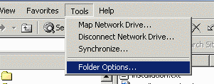
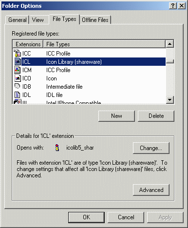

If you decide you no longer need Icon Library on your system
you can uninstall the complete product by following these simple
steps.
Find the folder where the program was installed. The default
location is C:\icolib5_shar for the shareware version, and
C:\icolib5_reg for the full registered version.
Delete this folder to completely remove Icon Library from your
system. There were no other files created on your disk during
installation that need to be deleted.
If you created a shortcut on your desktop, you can delete this
as well by highlighting the shortcut and pressing the Delete
button on the keyboard.
You may have a copy of the original download file called
icolib05.exe or icolib05_reg.exe in a
temporary folder on your system. This can be deleted if you are
certain you don't want to re-install Icon Library in the future.
If you registered the ICL file type to Icon Library, you
can remove this association by starting Windows Explorer and
selecting Folder Options... under the Tools menu.

Select the File Types tab and scroll down to the ICL
extension in the Registered file types selection box. You
should see Icon Library as the File Type for this extension. If
some other program is shown here, just click the Cancel
button to leave the registered file type as it is.

Highlight the ICL file type and click on the
Delete button. Click the Yes button when the system
asks if you are sure you want to delete it. The ICL entry
will no longer be visible in the Folder Options window. The
OK button at the bottom of the window will change to a
Close button which you click to complete the procedure.
Icon Library should now be completely removed from your system.